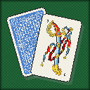
El Truco de verdad, adentro de Minecraft. 1v1 y 2v2 con señas, Envido, Flor, Truco y Vale Cuatro — y sí, podés mentir los tantos. Domá Carpinchos de 4 niveles, armá mascotas para tu equipo y salí a buscar partida por el mundo: ranchos, errantes y la mismísima Pulpería.
Motor de reglas en Java puro con 362 tests. Si el mod te cobra mal un envido, andá pensando en pedir disculpas.
Envido, Real Envido, Falta Envido, Flor, Contraflor y al resto, Truco / Retruco / Vale Cuatro, pardas, "el envido está primero" e irse al mazo. A 15 o 30 puntos, con o sin flor.
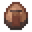
Sentate solo, o armá la Mesa Grande (2×2): el lado donde te sentás define tu equipo. En la ronda del envido solo habla el equipo que va perdiendo, como en la mesa real.
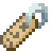
Al quererse el envido declarás tu tanto de palabra. Recién al final de la mano el rival decide: "Te creo" o "¡No te creo!" (mostrada) — y el mentiroso pescado paga castigo. Funciona en 1v1 y en 2v2.
En el 2v2 le señás carta y tantos a tu compañero por canal privado. Pero ojo: los rivales atentos te pueden pescar la seña — un flash de un instante — y vos a ellos.
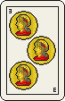
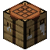
Un bloque de mesa con paño verde: click derecho y te sentás. Las cartas jugadas se ven sobre la mesa, en el mundo. Se craftea con lana verde y tablones.
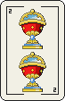
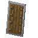
El servidor es la única autoridad: las cartas del rival nunca viajan a tu cliente hasta que se juegan. Ni con hacks, ni mirando paquetes.
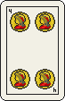
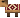
Tranqui, Canchero, Picante y el rarísimo Messi (~3% de las veces, el más difícil de todos). Cada uno con su pinta, sus frases, y con la variante mentirosa activada, sus propias mentiras.
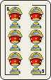
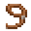
Ganale a un Carpincho salvaje y cebale un mate hasta domarlo: te sigue, juega de compañero en el 2v2 con la UI "Armar la mesa", y las que no entran a jugar hacen de hinchada.
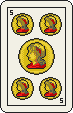
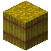
Ranchos con mesa y Carpinchos salvajes, Carpinchos errantes que adoptan mesas nuevas, y la rarísima Pulpería: el boliche de campo con dos mesas chicas, una Mesa Grande y 5 Carpinchos de distinta dificultad.
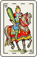
Crafteá la pava con hierro, metela en la fogata como la comida, y cebá el mate: dos sorbos con Regeneración y Velocidad. El mate cebado doma gratis, y convidárselo a un salvaje le baja la desconfianza.
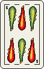
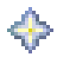
Tab de logros propio (partida perfecta, mostrar 33, ganarle al picante, domar tu primera mascota…), Revancha configurable al terminar y un fin de partida vistoso con las manos finales y el resumen.
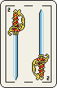
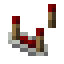
Tu récord contra el Carpincho por nivel, mentiras coladas/pescadas/mostradas con /truco stats, y el relato completo de tu última partida, paginado, con /truco last-match.
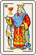
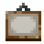
Baraja española real de 40, botones solo con los cantos legales, anotador de fósforos y relato de la mano — con el marco y los paneles de madera del propio mod. Escala de mesa/cartas y cámara, todo ajustable.
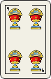
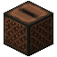
Interfaz y relato traducidos en los 3 idiomas. Frases reactivas, gruñidos con significado ("envido", "truco", "flor") y la ronda del mate que pasa de mano en mano por la mesa.
Esta es la baraja española real del mod, las mismas 40 cartas que ves en la mesa. Repartite tres y fijate qué tenés para el envido — si te tocan tres del mismo palo, cantá flor. O mentila, total acá no hay mostrada.
¿No hay nadie conectado? Agachate y clickeá tu mesa vacía: se sienta enfrente tuyo un Carpincho cebador de mate, en nivel Canchero. Pero si salís a recorrer el mundo te vas a topar con los cuatro, cada uno con su propia pinta y su propia forma de jugar — sin carteles, se le nota en la ropa.
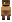
Mastica una brizna de pasto y no le interesa el conflicto: honesto y tímido, jamás infla un tanto.
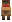
Pañuelo de gaucho al cuello y juego equilibrado. El rival por defecto en tu propia mesa.
Poncho puesto y sangre caliente: agresivo, mete flores falsas y desconfía. Si te pesca mintiendo, te toma de punto por el resto de la partida.
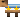
Camiseta argentina y ni un pelo de tonto: el crack. Rarísimo de encontrar (~3%) y el más difícil de los cuatro, un escalón por encima del Picante en todo.
Cada Carpincho tiene frases propias y gruñidos con semántica — uno suena a "envido", otro a "truco", otro a "flor". Se ceba su mate en rondas de a sorbos como cualquier jugador humano en la mesa.
Y tiene memoria: si le pescás una mentira en una mostrada, su desconfianza le sube para lo que queda de partida. Si le convidás un mate cebado, se la baja.
En el 2v2 no hace falta escribir nada: le señás la carta o el tanto a tu compañero con un ícono, como en la mesa real. El bot compañero las entiende y te responde a su manera.
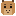
La más brava de las cuatro.
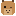
La segunda más brava.
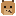
La tercera brava.
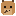
La pata coja: la cuarta brava.
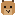
La carta más alta después de las bravas.
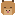
Tenés un dos en la mano.
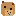
Tenés un envido para pelear.
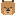
Treinta de envido.
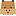
El envido más alto: 33.
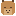
No tenés nada — o eso decís...
Ojo con esta mesa: las señas se pueden pescar. Si un rival está atento, ve el ícono ajeno en un flash de un instante — y vos podés cazarle la suya. Es información valiosa, no un chat.
Ganale a un Carpincho salvaje y cebale un mate: si sale bien (la chance depende del nivel, igual que la doma), es tuyo. Desde ahí es parte de tu equipo.
Ganale una partida y cebale un mate para intentar la doma: 1/2 al Tranqui, 1/3 al Canchero, 1/4 al Picante y 1/5 al Messi. Tenés una ventana para reclamarlo antes de que se te escape.
Por defecto te sigue a todos lados. Con "quedate" se sienta en el mundo a descansar — no juega, no camina de más y no se pierde.
En la Mesa Grande, la UI "Armar la mesa" te deja elegir con qué mascota jugás: un click y se sienta enfrente tuyo, lista para señarte.
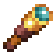
Las mascotas que no entran a la mesa (o que ya jugó otra) se paran detrás tuyo a mirar la partida. Nadie se queda afuera del todo.
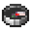
/truco petsAbre el panel "Tus carpinchos" con ubicación y modo de cada uno. come las silba desde donde estén; forget olvida a las que se perdieron para siempre.
No hace falta craftear nada para tropezarte con una partida: el mundo genera sus propios rivales.
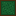
Un cobertizo con una mesa y un Carpincho salvaje de nivel fijo de por vida. Sentate y la partida arranca sola.
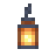
El mismo cobertizo pero con la Mesa Grande y tres Carpinchos salvajes esperando: sentate en el lado libre y arranca el 2v2 al toque, vos con uno de compañero.
Deambulan buscando dónde jugar. Plantale una mesa cerca y la adoptan: caminan hasta ella y esperan rival. Si pierden su mesa, vuelven a errar.
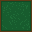
El boliche de campo del truco, rarísimo de encontrar: dos mesas chicas y una Mesa Grande, con 5 Carpinchos de distinta dificultad esperando turno.
Crafteás la pava con hierro y la metés en la fogata, igual que la comida: cuando hierve, cebás el mate.
Un mate cebado trae 2 sorbos, y cada uno te da Regeneración y Velocidad — el clásico "empujoncito" de una buena ronda.
De yapa: al intentar una doma con mate cebado el mate no se gasta (la victoria previa sigue haciendo falta, eso no se negocia), y convidárselo a un salvaje sin domarlo le baja la desconfianza para la próxima partida.
2 SORBOS
REGEN + VELOCIDAD
Así se ve todo esto puesto en el mundo — la Pulpería, el 2v2, el Messi, la pava cebando.
Se craftea con lana verde y tablones (también está en el creativo). Para el 2v2, armá la Mesa Grande de 2×2.
Apoyala y hacé click derecho: quedás sentado con el cartel "X quiere jugar al Truco" esperando rival. En la Mesa Grande, el lado que elegís es tu equipo. Agachate al clickear una mesa vacía y jugás directo contra el Carpincho.
Click derecho en la misma mesa, acepta la invitación y se abre la GUI: click en una carta para jugarla, botones para cantar, tanto declarado al quererse el envido y señas al compañero en 2v2.
Tranquilo: click derecho en la mesa y volvés a la partida como si nada.
Ojo con dos cosas: el tanto del envido lo declarás de palabra, así que la mentira es una opción, no un error; y en 2v2 tu compañero recibe (y puede pescar) señas, no un mensaje de chat.
Jugar NO requiere ningún comando: todo sale de sentarte a la mesa. Estos son solo para consultar datos o, si sos operador del server, para configurar y depurar.
/truco statsTu récord contra el Carpincho (total y por nivel) y tus mentiras coladas, pescadas y mostradas ganadas./truco last-match [página]El relato completo de tu última partida, paginado de a 12 líneas./truco pets [come|forget]Sin argumento abre el panel de tus mascotas. come las silba; forget olvida a las que se perdieron para siempre./truco settings [points|flor|lie|rematch-seconds|pets-limit]Cualquiera puede ver los valores actuales. Cambiarlos requiere ser operador OP: puntaje objetivo, con/sin flor, mentir tantos, segundos de revancha y límite de mascotas./truco debug [challenge|2v2|accept|decline|reopen|surrender|rematch|bot]Solo operadores OP, para probar sin depender del mundo: desafiar, armar 2v2, aceptar/rechazar, reabrir la mesa, rendirse, pedir revancha o invocar al Carpincho (bot facil|normal|picante|messi).Crafteos: la mesa con lana verde + tablones, la Mesa Grande juntando dos mesas, y la pava con hierro.
mods/ de tu instancia y de tu servidor.Por ahora la distribución es manual, jar por versión — todavía no está en Modrinth.
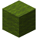
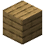
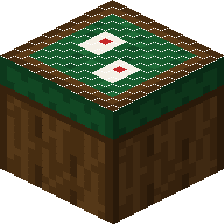